Easy to learn. Impossible to put down.

Project Background
Soda Shake Race is a casual, group-based mobile game where players compete by rapidly shaking/tapping to fizz up a soda can and achieve the highest score.
The project focused on designing an experience that is instantly understandable, socially engaging, and highly replay-able.
The low fidelity flows designed by the client had a lot of gaps that were identified:


Where is the friction?
After interviewing some users and also doing some secondary research, there were some friction points users that came up.
.PNG)
"I love party games, but if I spend more time figuring out how to play than actually playing, I lose interest pretty quickly."
-Keith, 19 years old, Design Student
- Players want to start playing immediately with little to no onboarding.
- Players expect rewarding visual feedback and satisfying interactions.
- Clear score tracking and progression encourage repeat play and friendly competition.
"When friends come over, I want a game we can jump into immediately. If I have to explain rules for five minutes or ask everyone to buy the game, we usually just give up and do something else."
Preesha, 24 years old, Young Professional
- Many multiplayer games require multiple purchases or installations.
- Complex rules create friction for non-gamers and casual players.
- Complex rules create friction for non-gamers and casual players.
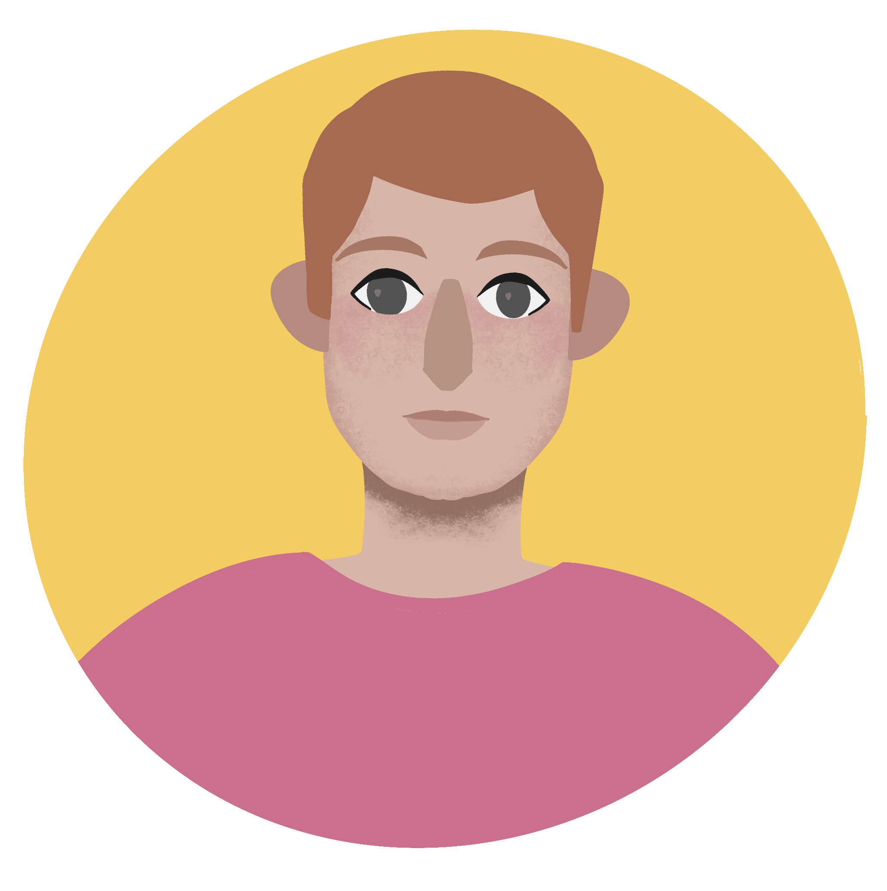
"Sometimes I only have ten minutes between classes or during my commute. If a game takes too long to start or explain, I won't bother opening it."
Martin, 22 years old, Student
- Lengthy tutorials create barriers to quick engagement.
- Players want meaningful gameplay in short sessions.
- Fast restart loops increase replay-ability and retention.
User Goals
We need to make players feel included, excited, and immediately ready to play.
- Start playing within seconds without lengthy tutorials.
- Enjoy satisfying interactions and playful visual feedback.
- Play with friends regardless of gaming experience.
- Experience low cognitive load and simple gameplay.
- Feel motivated to replay through competition and score tracking.
Business Goals
Soda Shake Race needs to attract players quickly and encourage repeat sessions.
- Reduce onboarding friction and time-to-first-game.
- Increase replayability through short gameplay loops.
- Improve player retention through rewarding feedback systems.
- Create a memorable experience that players want to return to.
Design Process
After identifying the friction points, I started to ideate and create a prototype for the redesign of the auto-update feature. Through the process, I focused on making the update flow more transparent, giving users autonomy, and easing them into the update screen.


Main Home Screen
- The Initial Home screen had a settings button that felt too clunky, so I used a icon button instead alongside a leaderboard icon. This way all major information is easily accessible.
- For the visual I explored different variations and settled on a Vending machine taking up the majority of the screen.
- Circle Play was a multiplayer mode that was still in development. The aim of this project was to ideate the basic gameplay mechanics.
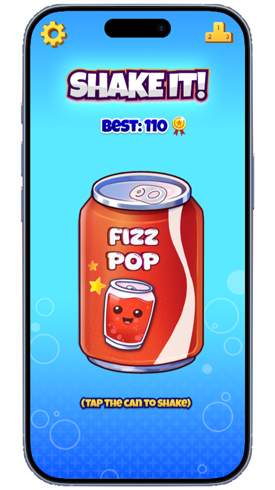
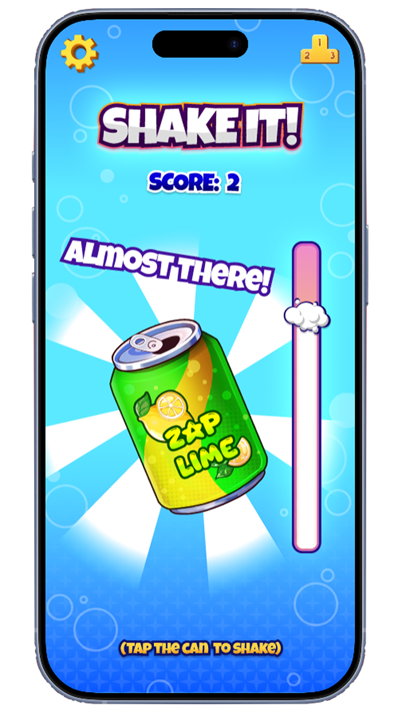
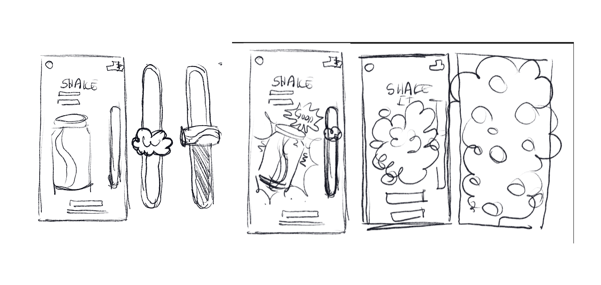
Game Play Screen
- I kept the game play screen simple.
- There was also an inclination to avoid any tutorials and keep the onboarding very self explanatory.
- As the player taps the can, the game starts instantly. Bubbles rise through a progress bar while visual feedback rewards every interaction, making the mechanic feel satisfying and responsive.
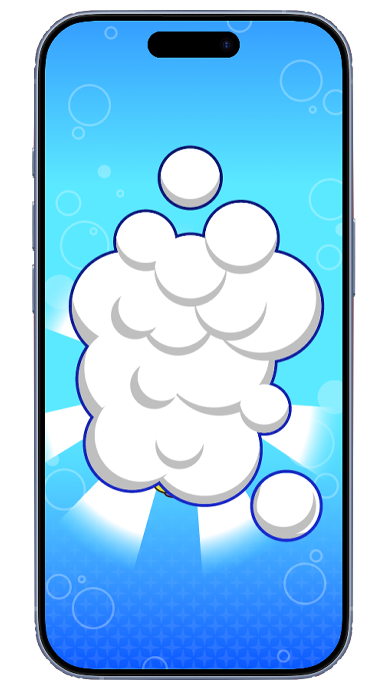
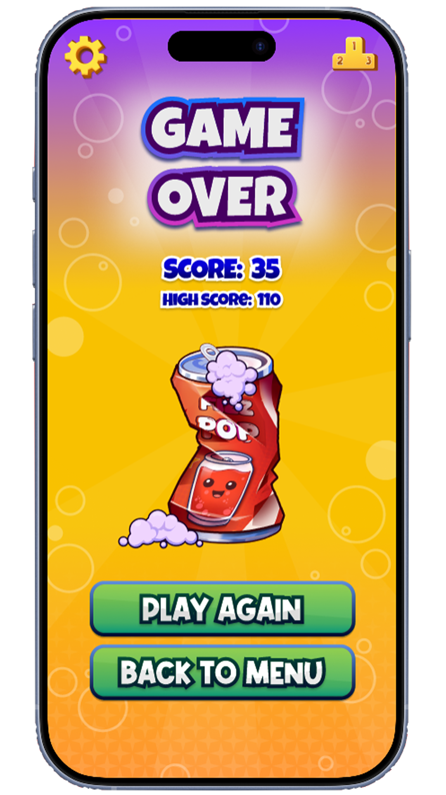
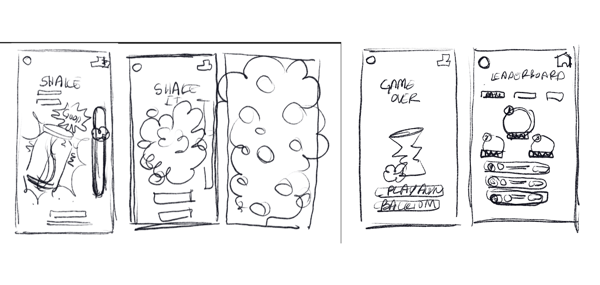
Game Over Screen
- Once the progress bar is full, the game ends and entire screen is overed with bubbles to transition to the Game over Screen
- The game Over screen includes a summary of the player's performance and options to restart or exit. I also kept the visual of a crushed can consistent with the low fidelity prototype provided by the client.
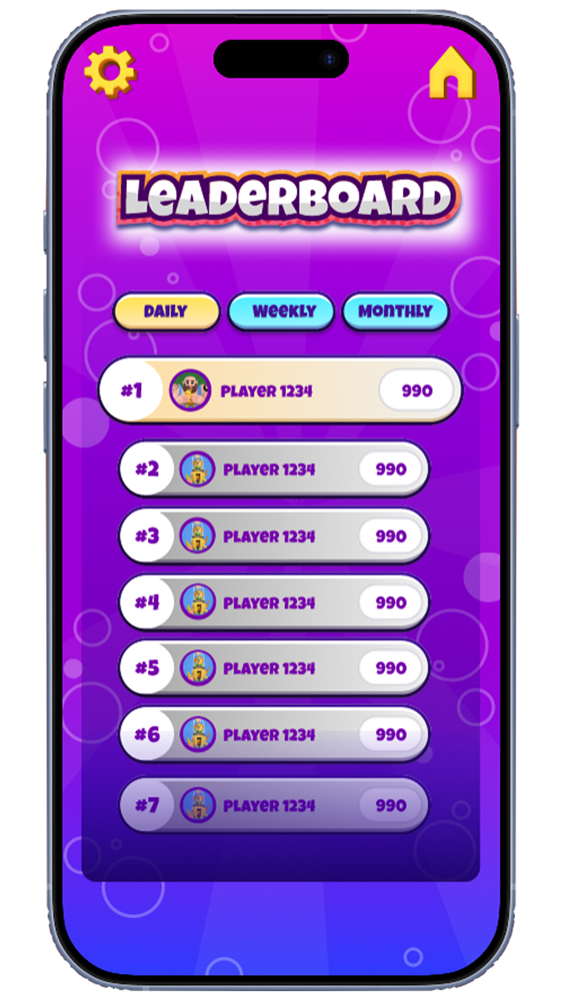
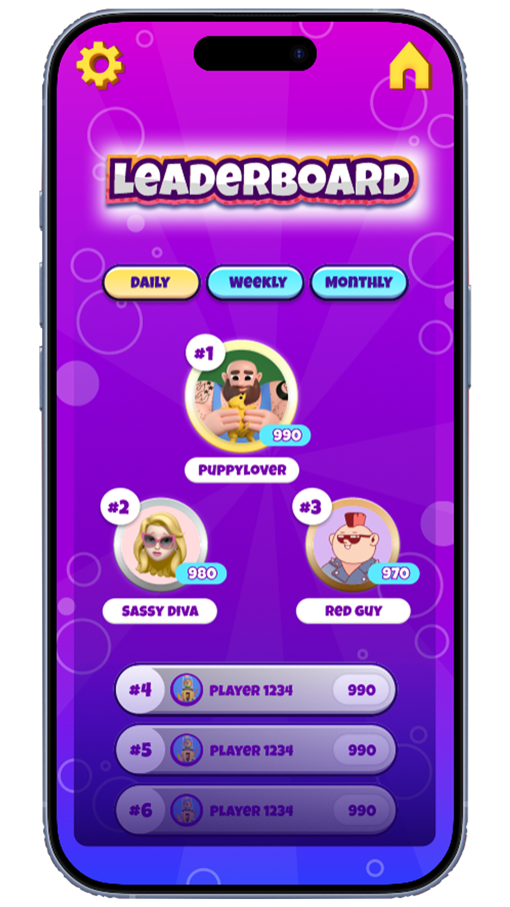

Leaderboard Screen
- Initially, I kept the leader board design similar to casual games that are popular among the target audience.
- However, Since the game doesn't have complicated mechanics, I wanted to aim to reach a sense of achievement for the players by Highlight the first three top winners of the Leaderboard.
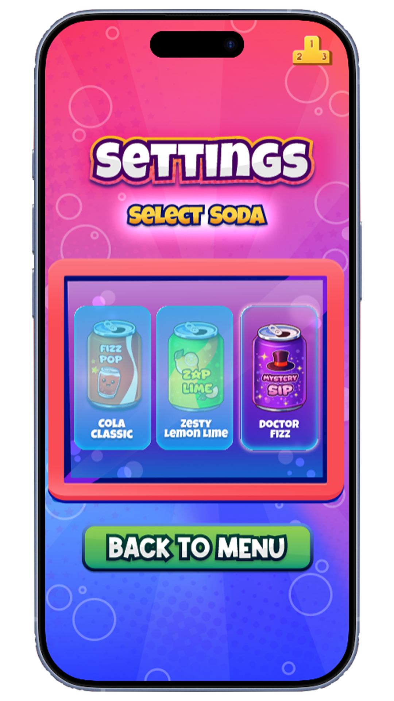
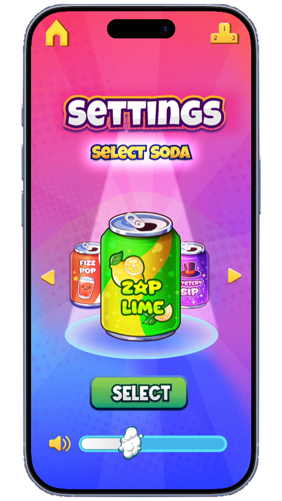

Settings Screen
- One of the two versions of the Settings page was designed to mimic a vending machine. However, this approach didn't help in highlighting the focal point.
- The other version focused on a clean, minimal design that prioritized the available options for the user. This way even people with color/minimal visual disabilities can easily differentiate between the selected can and non-selected cans.
Usability testing
I showed these prototypes to potential players ranging from regular gamers to people who rarely play mobile games. The goal was to understand whether players could start playing quickly without additional explanation and whether the feedback system felt rewarding.
I liked that I could understand what to do immediately without anyone explaining the game to me. The bubbles and illustrations made it feel satisfying as I progressed through the game.
— Usability test participant
Participants understood the core gameplay mechanic within the first ten seconds of interaction. One participant suggested introducing a short visual countdown before the game begins to better prepare players for the race.
Final Design
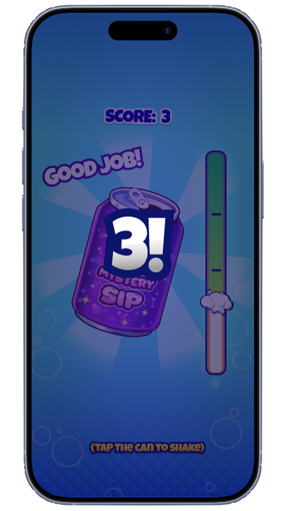
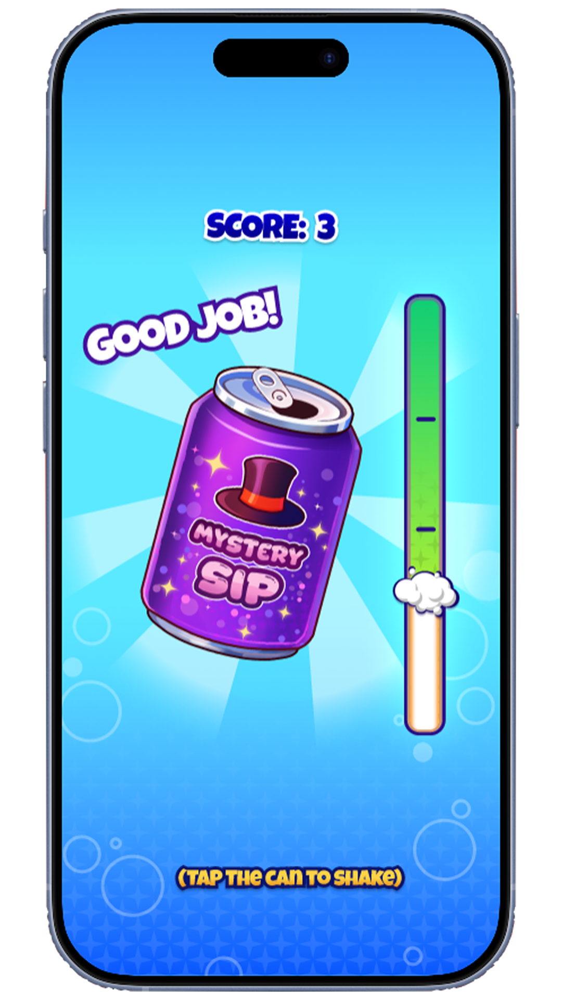
Impact
- A simple interaction mechanic makes the game immediately understandable to new players.
- Clear visual feedback helps players stay engaged during fast-paced rounds.
- Short match durations make the game suitable for casual, pick-up-and-play sessions.
Reflections
This project taught me that simplicity is often much harder to design than complexity. Creating an experience around a single core interaction meant every element—from feedback and pacing to visual clarity—had to work together to keep players engaged. It reinforced the importance of reducing cognitive load and designing for moments of excitement, competition, and shared experiences rather than feature quantity.
Next Steps
- Explore multiplayer circle-play dynamics to strengthen the feeling of playing with friends in real time rather than alongside them. Future iterations would investigate shared feedback systems, synchronized moments, and social cues that enhance the sense of co-presence during gameplay.
- Further develop the micro-interaction animations to make actions feel more responsive, satisfying, and rewarding, reinforcing the playful nature of the experience.